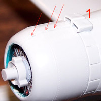
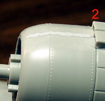
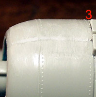

Mr. Surfacer from Gunze-Sangyo
Part Numbers 284, 285 and 286
Approximately $4.95 per jar
Images and text Copyright � 2005 by Matt Swan
A few years ago I heard tales of a product some modelers were using to clean up imperfections in plastic, Mr. Surfacer. This Mr. Surfacer stuff was elusive but rumor had it that you could fix all sorts of minor surface issues with it. Unfortunately I could not find it anywhere, nobody carried this wonder filler and to make matters even worse � there was a rumor that it had gone out of production! Turns out the stuff is in production and thanks to Great Models Webstore is readily available to the entire modeling community. At long last I have in my paint stained hands three grades of Mr. Surfacer liquid filler ready for testing. This stuff has some pretty heady fumes so allow for adaquate ventilation during use and when airbrushing a good respirator should be used.
One other cautionary note before we get started, Mr. Surfacer is a lacquer based material which means it is pretty �hot�. With this in mind, you should be doing as much of your filling and finishing work before applying paint as possible. This is especially true when using enamel paints as any lacquer-based product can cause severe cracking, splitting or bubbling on enamels. To avoid problems it is best to use Mr. Surfacer 1200 as a primer or a lacquer-based primer to help you find areas that still need work.
Mr. Surfacer 500
This coating is useful for filling in bumps, dents, scratches, for removing bubbles, texturing and finishing bases. It is suitable for large-scale repairs and can be used as soluble putty. I tested this on an old Nichimo kit that had several large sinkholes; some rather pronounced gaps along seams and some step issues at some joints. Before using Mr. Surfacer you will need to shake the bottle well, at least a minute to get a good mixture. For the large seam I used a 3/0 "spotter" artist's brush and applied a layer of liquid filler, let set for about a minute to dry (and it dries quickly) then applied another layer. I built it up in this manner until the seam was filled. It really behaved like a very thick paint. The paintbrush was cleaned with lacquer thinner. I let the seam dry for about five minutes then looked into methods of cleaning it up.
The first thing I tried was to use a cotton swab dipped in acetone based fingernail polish remover. This works for Squadron White Putty so I thought �what the heck, why not on this also.� The results were not quite what I hoped for, it did not really soften the filler but did roll some if it off in larger pieces. The resulting finish was not as smooth as hoped for. Okay, let�s try something else. Using a cotton swab dipped in lacquer thinner I worked over the next section of seam. This worked much better; the filler was softened and removed from the high spots while leaving the seam filled. After a short dry period the seam got a light fine sanding and looked great. This definitely seems to be the way to go with this product. One reader has had good results using Testors liquid glue, the kind with the brush in the bottle, as a method of smoothing out the filler.
 Next I�ll tackle one of the stepped seams. All these small images you will see are linked to larger images if you care to click on them. Instead of using the paint brush this time I will apply the filler with a round toothpick. I�m able to fill the step quickly with a good amount of filler, let it dry down for a few minutes and added a little more to make the area slightly proud of the surrounding surface. After twenty minutes of dry time the area was wiped with the swab and lacquer thinner to smooth it out then sanded very lightly and quickly. The step was leveled out and the surrounding raised detail hardly took any damage � very impressive. Just so you know, I�m using fine Testors sandpaper for my light sanding in the 400 to 600 grit range.
Next I�ll tackle one of the stepped seams. All these small images you will see are linked to larger images if you care to click on them. Instead of using the paint brush this time I will apply the filler with a round toothpick. I�m able to fill the step quickly with a good amount of filler, let it dry down for a few minutes and added a little more to make the area slightly proud of the surrounding surface. After twenty minutes of dry time the area was wiped with the swab and lacquer thinner to smooth it out then sanded very lightly and quickly. The step was leveled out and the surrounding raised detail hardly took any damage � very impressive. Just so you know, I�m using fine Testors sandpaper for my light sanding in the 400 to 600 grit range.
This product is also useful for creating textured surfaces. I�m working on a Fw-200 C-3 Condor and need to replicate a canvas surface for the front gondola machine gun. Rather than cut out the clear plastic pane and replace it with plastic wrap I took some Mr. Surfacer 500 on a 3/0 spotters brush and dabbed it onto the selected pane. I let it dry for a few minutes then added more in radiating bars from the gun barrel to the edge of the canvassed area. I did this a third time and let it all dry down. After this area has been airbrushed with the basic exterior colors I�ll come back with a brush and paint it a canvas color.
The fast drying aspect of this product is great on the surface of the model but does present some slight difficulty when applying it with a brush. I was using the inside of the bottle top as a work pallet and it was skimming over very fast and drying on the brush very fast. Using a toothpick did prove to be an easier method of application; I was able to pick up a good amount on the tip of the toothpick and was not bothered as much by the product skimming on my work pallet. It also eliminated the need to clean a paintbrush.
Mr. Surfacer 1000
Mr. Surfacer 1000 contains finer granules than Mr. Surface 500. Both products are used in much the same way but with the finer granules, after sanding a more perfect surface is possible. This still has a very short dry time but is much easier to work with on a paintbrush. This can also be thinned with lacquer thinner or dio-sol and airbrushed on your model as a primer. Some brands of lacquer thinner may be too strong for this and cause the filler to dry the moment it leaves the airbrush. This can be remedied with the addition of a few drops of Mr. Retarder in your mix. Use it as a follow-up to normal putty work to fill in those occasional little pits or cracks in the putty following sanding. It is a quick and easy alternative to re-puttying because of it's faster drying time.
I did a cowling spine seam with Mr. Surfacer 1000 applied with a 3/0 spotters brush, smoothed it with the lacquer thinner and sanded it with a 320 grit sanding stick followed by some 600 grit paper to finish it off. The images below show the results of this. You can click on them to view larger pictures.



On my Nichimo build I have a wing to fuselage seam that is giving me some trouble. It had a raised step that I shaved off but now the surface is slightly uneven. With some Mr. Surfacer 1000 I brush the area with two good coats and let dry. Using a lint free rag and some Methylated Spirits (200 proof denatured ethyl alcohol) I gently wipe the area. The Mr. Surfacer is thinned on the high spots and fills in the low spots. Hmmm, maybe we should go back to the 500 and give this stuff a try there?
Wait just a minute here; let us back up just a wee bit. Methylated Spirits might be a little out of the range of practicality for most modelers so let�s try something somewhat easier to get your hands on like 50% or 70% isopropyl alcohol. Using one of these on a cotton swab while the Mr. Surfacer 500 or 1000 is still fresh does not dissolve the product but seems to act more as a lubricant allowing you to soften the surface and smooth it out. Now let the stuff dry and come back with some lacquer thinner on yet another cotton swab and dress up the edges. It is an extra step but uses commonly available materials and produces and very nice finish requiring little if any sanding.
Mr. Surfacer 1200
This version of the product is available in two forms; in the bottle as the previous examples and in an aerosol can. This seems to imply that it is also intended for use as a primer. The product does not spray well when used directly from the bottle but the addition of 30% lacquer thinner produced a very nice solution. To avoid having the product dry before it could level out on the model I moved my air pressure up to about 18 or 19 psi and worked from a 4 to 6 inch range. I used a Badger 360 airbrush. At no point did the Mr. Surfacer want to create drips or runs in the finish even at this high pressure and close range.
 The Mr. Surfacer dried very quickly on the model surface and left me with a nice, velvety finish and one coat resulted in excellent coverage. I was able to gently handle the model within ten minutes of airbrushing and it looks like I could go directly to top color paint at this point. If I was going to put down a natural metal finish some very fine sanding and polishing might be needed. Speaking of natural metal finishes; I have spoken to a few modelers that have used this as a primer for Alclad lacquer paints. They have all reported very good results with no lifting or cracking. They have also all reported following the Mr. Surfacer application with sanding up to 3800 grit before spraying the Alclad finish. Since we are using lacquer thinner as a thinning agent here the product will get a very good bite into the plastic so it seems logical that it would work in this application. Remember, this is thinned with lacquer thinner so good ventilation and/or a good respirator is required when airbrushing.
The Mr. Surfacer dried very quickly on the model surface and left me with a nice, velvety finish and one coat resulted in excellent coverage. I was able to gently handle the model within ten minutes of airbrushing and it looks like I could go directly to top color paint at this point. If I was going to put down a natural metal finish some very fine sanding and polishing might be needed. Speaking of natural metal finishes; I have spoken to a few modelers that have used this as a primer for Alclad lacquer paints. They have all reported very good results with no lifting or cracking. They have also all reported following the Mr. Surfacer application with sanding up to 3800 grit before spraying the Alclad finish. Since we are using lacquer thinner as a thinning agent here the product will get a very good bite into the plastic so it seems logical that it would work in this application. Remember, this is thinned with lacquer thinner so good ventilation and/or a good respirator is required when airbrushing.
After airbrushing I cleaned my brush with some lacquer thinner. I shot three doses of lacquer thinner through the airbrush then disassembled it and inspected it for any damage. I am happy to report that the Mr. Surfacer product is completely safe in any good quality airbrush.
Conclusions
Mr. Surfacer 500, 1000 and 1200 are excellent for small corrections, as a follow-up to normal putty work to fill in those occasional little pits or cracks in the putty following sanding, is great for filling small seams, "divots" or gouges and makes for an outstanding all purpose primer. It is useful for preparing resin parts and taking care of those annoying micro-bubbles. It can be thinned with lacquer thinner, smoothed out with denatured alcohol and can be sanded to an unparalleled feather. It can be applied with a spotter paintbrush, via toothpick or dental probe or used in an airbrush. It cleans up quickly and easily with lacquer thinner and will most certainly make your modeling more pleasant.
While I am personally focused on model aircraft the possible uses for this stuff extend far beyond this facet of the hobby. For Treadheads you can use this to make weld seams, antislip surfaces on the tops of tanks and on the base for accumulated mud and dirt. For figure applications use it on arm and leg joints, fill in behind where packs and other equipment join to the body or as a gap filler for attaching the figures boots to the ground work.
I can see that the Mr. Surfacer line will be a regular item on my modeling table in the future. Review samples were courtesy of Great Models Webstore.
8/12/06
Brad S. has been working with Mr. Surfacer since the early 80�s and uses lacquer thinner for clean-up only. He is getting good results using Gunze Mr. Leveling Thinner as his airbrush thinner when using Mr. Surfacer. He goes on to say that one trick he has learned when using alcohol to remove excess Mr. Surfacer is to allow the alcohol to sit on the Surfacer for a few moments to soften the top layers before wiping. It seems that Mr. Leveling Thinner is actually Mr. Thinner and Mr. Retarder combined but at what ratio we are uncertain. Thanks Brad for sharing your experience with us.


 Next I�ll tackle one of the stepped seams. All these small images you will see are linked to larger images if you care to click on them. Instead of using the paint brush this time I will apply the filler with a round toothpick. I�m able to fill the step quickly with a good amount of filler, let it dry down for a few minutes and added a little more to make the area slightly proud of the surrounding surface. After twenty minutes of dry time the area was wiped with the swab and lacquer thinner to smooth it out then sanded very lightly and quickly. The step was leveled out and the surrounding raised detail hardly took any damage � very impressive. Just so you know, I�m using fine Testors sandpaper for my light sanding in the 400 to 600 grit range.
Next I�ll tackle one of the stepped seams. All these small images you will see are linked to larger images if you care to click on them. Instead of using the paint brush this time I will apply the filler with a round toothpick. I�m able to fill the step quickly with a good amount of filler, let it dry down for a few minutes and added a little more to make the area slightly proud of the surrounding surface. After twenty minutes of dry time the area was wiped with the swab and lacquer thinner to smooth it out then sanded very lightly and quickly. The step was leveled out and the surrounding raised detail hardly took any damage � very impressive. Just so you know, I�m using fine Testors sandpaper for my light sanding in the 400 to 600 grit range. 
{kind=link}
{kind=link}
{kind=link}
{kind=link}
{kind=link}